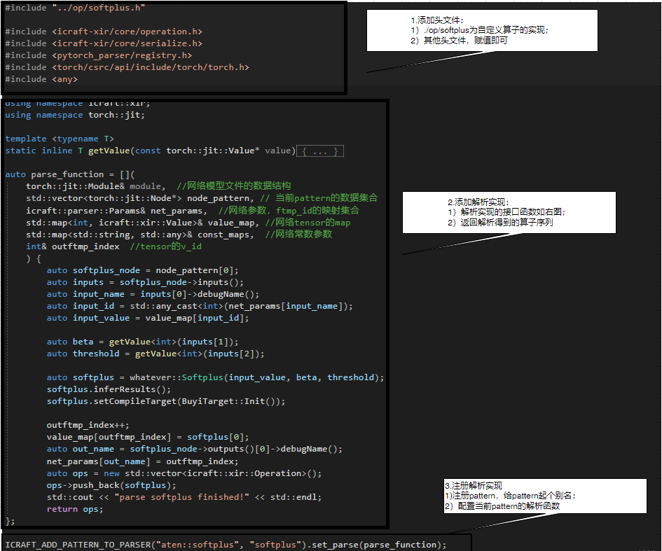

icraft-parse#
icraft-parse作为icraft与框架的交互组件，该组件实现了神经网络模型从框架到icraft的转换。
一 使用说明#
1.1 安装与依赖#
Icraft编译器由应用程序和对应的依赖库构成，以安装包的形式提供给用户。用户在使用Icraft编译器前，需要先安装编译器安装包、第三方依赖库以及一些常见的自定义硬算子demo。 安装上述Icraft后即可使用icraft-parse实现指令生成的调用。
1.2 CLI说明#
安装完成后如需单独通过CLI调用，参数说明参见下表：
参数名称 |
数据格式 |
说明 |
|---|---|---|
net_name |
string |
表示网络模型的名字 |
network |
string |
表示网络模型文件的路径，通常与weight（参数文件）配合使用。部分框架的网络模型和参数在同一个文件，该情况下，仅需配置network即可 |
weights |
string |
表示参数文件的路径，与network配合使用 |
jr_path |
string |
表示解析组件输出文件的存放路径 |
log_path |
string |
可选，表示解析组件执行过程输出的log文件的存放路径，省略则放到默认路径”./.icraft/logs/”下 |
framework |
string |
产生网络的框架，仅支持 |
frame_version |
string |
框架版本号，因为只有 |
inputs |
string |
表示网络输入的尺寸，因为网络存在多输入的情况，因此需要给每个输入配置输入尺寸，以”;”分隔，每个输入内部以”,”区分维度 |
inputs_layout |
string |
表示网络输入的layout，因为网络存在多输入的情况，因此需要给每个输入配置layout，以”;”分隔，在cnn领域，推荐配置”NHWC”，对于维度含义不确定的情况，推荐”C”,’’的输入为input.dim.size-1，表示采用深度学习框架的排布 |
pre_method |
string |
表示网络前处理，因为网络存在多输入的情况，因此需要给每个输入配置前处理，以”;”分隔，当某个输入没有前处理时，需要用nop占位 |
pre_mean |
string |
表示网络前处理参数pre_mean，因为网络存在多输入的情况，因此需要给每个输入配置前处理，以”;”分隔，当某个输入没有前处理参数pre_mean，需要用nop占位 |
pre_scale |
string |
表示网络前处理参数pre_scale，因为网络存在多输入的情况，因此需要给每个输入配置前处理，以”;”分隔，当某个输入没有前处理参数pre_scale，需要用nop占位 |
channel_swap |
string |
表示网络前处理参数channel_swap，因为网络存在多输入的情况，因此需要给每个输入配置前处理，以”;”分隔，当某个输入没有前处理参数channel_swap，需要用nop占位 |
pre_check |
string |
表示是否启动整个编译器级别的模型预检，仅针对OnnxParser有效，默认为true，即对模型中不支持的算子（如不支持Sin、Cos算子）、和算子不支持的边界条件（如Conv不支持五维输入）进行预检；设置为false时，只完成Parser组件的预检，即仅对模型中不支持的算子进行预检；预检不通过则不进行编译 |
1.2.1 前处理方式#
icraft内置四种前处理方式，分别是premethod、channel_swap、pre_mean、pre_scale。在icraft中，如果前处理方式存在，那么前处理方式的执行序是固定的，依次为 premethod->channel_swap->pre_mean->pre_scale.
1.3 组件的调用#
通过CLI调用命令如下： icrat-parse –net_name resnet152 –network ./resnet152.onnx –log_path ./ –jr_path ./ –inputs 1,224,224,3 –pre_method nop –pre_scale nop –pre_mean 1,2,3 –channel_swap nop –inputs_layout nhwc
1.4 模型预检#
调用icraft-parse命令，Icraft-Parser首先会针对模型的支持情况进行 预检 ，如果预检通过，则向下执行解析；如果预检不过，即模型中存在icraft不支持的算子，则会打印预检不通过提示，预检结果保存在 .icraft/logs/ 下的 ``xx_precheck.csv``文件中。以一个包含了torch.softplus的模型为例，预检结果如下：
pattern_num |
begin_index |
end_index |
input |
output |
op_serial |
|---|---|---|---|---|---|
0 |
1 |
1 |
x.1 16 17 |
18 |
1(18)aten::softplus |
在深度学习框架中，会用一系列 细粒度 的算子序列来实现 粗粒度 的算子，因此我们拿到的模型文件，通常是采用细粒度的算子来描述的。Icraft-Parser的解析思想是，针对框架算子序列（即 pattern ）进行解析，将算子序列解析到icraft的算子。我们认为，连续出现的不支持算子序列大概率为同一个算子的底层实现，因此 softplus_network_precheck.csv 会将检测到的连续不支持算子放到一行中描述，以方便理解和添加解析实现。
当前实例中，Icraft-Parser无法解析算子序列 aten::softplus （此处的序列，只有一个算子），因此我们需要利用Parser的自定义解析接口，将 aten::softplus 映射到Icraft XIR.
1.4.1 OnnxParser模型预检#
OnnxParser模型预检除了上述基础功能外，还实现了对算子支持的边界条件、后续组件无法支持的边界条件等进行预检，比如onnx中conv包含conv1d、conv2d、conv3d，但OnnxParser不支持解析conv3d；
预检的结果同样保存在 .icraft/logs/ 下的 ``xx_precheck.csv``文件中，csv文件中详细记录了不支持的算子，以及不支持的原因和组件。
当预检失败时，表示当前模型有算子不支持解析，或者有算子无法等效到icraft的算子，亦或者有算子在后续组件无法编译，此时Parser将会停止模型解析，并输出错误信息；
如果因后续组件无法支持的报错，且仍需查看解析后的模型，可以尝试配置pre_check=false强行进行模型编译。
二 组件结构#
该组件由两部分组成：
icraft-parse.exe
icraft-xxparser.dll
2.1 icraft-parse.exe#
icraft-parse.exe作为组件的顶层，主要负责根据用户参数的配置调度相应的parser进行网络模型的解析。
2.2 icraft-xxparser.dll#
目前，Icraft平台支持的框架有：
Pytoch，支持pytorch1.9原生的网络模型文件（.pt格式）
Onnx，支持
PaddlePaddle、Mindspore框架保存为onnx格式的模型文件，opset=11。
三 自定义算子在解析组件中的接口#
Icraft当前已经包含了丰富的算子库(详见 《Icraft-Docs/算子支持》)，可以满足大部分神经网络模型的编译需求。但在某些场景下， 可能需要用户自定义算子来实现特定的计算过程。如：
Icraft还未支持的算子，且无法通过其它算子组合实现；
使用多个算子组合无法取得最佳计算性能，而自定义算子时通过自定义该算子在后端的实现可以提高性能。
自定义算子功能允许用户自由地定义算子的输入输出和属性，以及在编译运行过程中的实现。比如，用户完成自定义算子的注册后，可以在前端解析中自定义框架算子到该算子的转换逻辑，可以在量化中自定义该算子的量化方式，还可以在各个后端中添加该算子的前向实现。本章节阐述解析组件提供的自定义算子接口，用于将icraft不支持的算子接入到网络。
Icraft-parse目前提供pytorch、onnx两个框架的解析自定义算子的接口。
3.1 PytorchParser#
如前所述，Icraft-Parser会在解析前针对模型文件进行预检，用户需要结合预检文件中的 op_serial 和模型确定不支持算子的pattern。
【不推荐】按照模型文件中算子粒度来定自定义算子的粒度，这样很多情况下需要添加很多自定义算子，工作量大，上板运行的时效性也不好；
【☆推荐】按照框架算子的粒度来定义自定义算子的粒度，好理解，工作量小，上板时效性高。
pattern确定之后，就可以着手添加自定义算子的实现和解析实现了，自定义算子的解析依赖自定义算子的定义，请参考《XIR用户手册》，本文不做详细描述。
3.1.1 准备工作#
PytorchParser的自定义算子接口依赖Pytorch2.0.1库文件，使用前请提前安装好Pytorch2.0.1。
1conda install pytorch==2.0.1 torchvision==0.15.2 torchaudio==2.0.2 cpuonly -c pytorch
PytorchParser基于.pt格式进行模型文件的解析 PytorchParser的自定义算子实现步骤如下：
3.1.2 解析实现#
PytorchParser提供接口函数 parse_function 来供用户实现解析函数，提供 ICRAFT_ADD_PATTERN_TO_PARSER 来实现相关pattern的注册，以torch.softplus为例。

3.1.3 编译链接#
Icraft-Parser要求自定义解析生成 动态链接库，命名需以``icraft.parse.`` 开头。
1# 在parser.cpp中使用了Libtorch的接口，因此需要链接Torch的库
2# 如果用户安装了pytorch，可以使用pytorch安装包中的库
3# 下面示例中将anaconda安装的pytorch的库中的CMAKE文件路径添加到了CMAKE_PREFIX_PATH
4# 这样就可以使用find_package查找Torch库了
5set(TORCH_PACKAGE_PATH C:/Users/chenghongxu/anaconda3/Lib/site-packages/torch)
6set(CMAKE_PREFIX_PATH ${TORCH_PACKAGE_PATH}/share/cmake/Torch)
7find_package(Torch)
8
9# 创建动态链接库icraft.parse.softplus
10add_library(icraft.parse.softplus SHARED "")
11
12target_sources(icraft.parse.softplus PRIVATE
13 parser.cpp
14)
15
16# parser.cpp中使用了PytorchParser和Torch的接口，需要链接相应的库
17target_link_libraries(icraft.parse.softplus PRIVATE Icraft::PytorchParser torch)
以上脚本在Windows下编译生成 icraft.parse.softplus.dll 文件。
备注
Icraft-Domo中activate模块，提供了PytorchParser的自定义parser的接口使用demo，请结合相关demo阅读。
3.2 OnnxParser#
OnnxParser的自定义算子解析接口与PytorchParser基本一致，请结合Icraft-Domo中softop 模块进行应用。